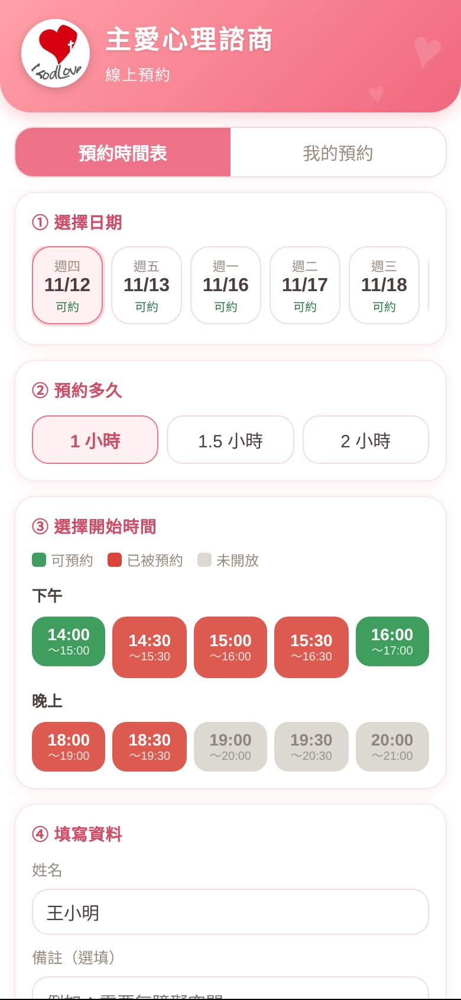
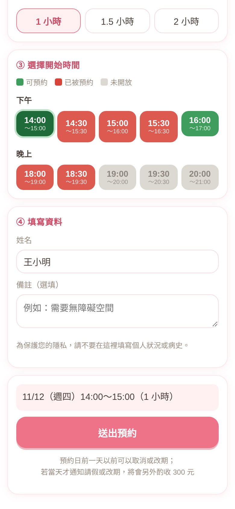
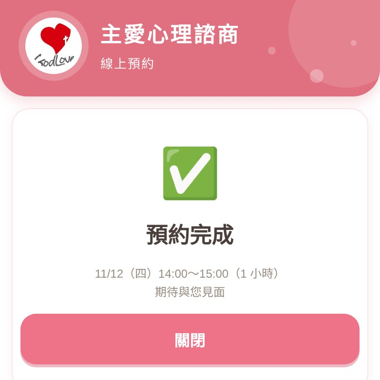
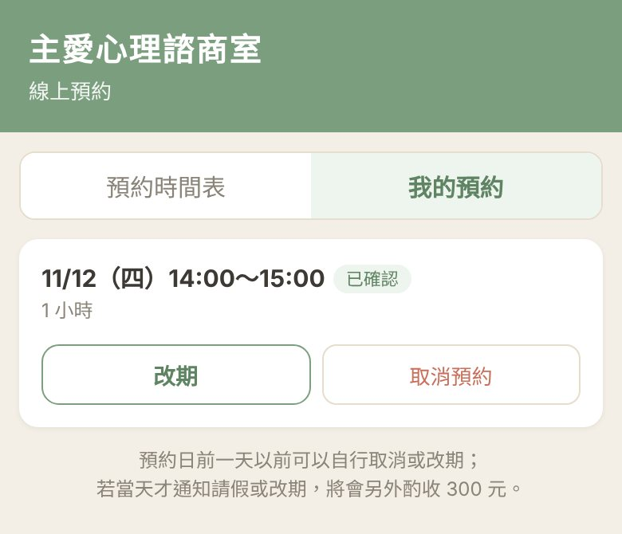

從現在開始，您可以直接在 LINE 裡預約、改期、取消，不用再打電話或傳訊息來約。看到有空的時段就能立刻選，約好會馬上收到通知，並在預約前一天收到提醒。
整個流程大約 1 分鐘。第一次使用，請先做步驟 1。
1先回覆我們您的姓名與電話
請在這個 LINE 官方帳號的聊天室裡，傳一則訊息，格式是「姓名 電話」：
王小明 0912345678
收到後，系統會自動回覆「已記下您的資料」。這樣之後預約時，姓名會自動帶入，不用重打。
只需要做一次。資料只用來辨識預約，不會對外公開。
2點選單的「預約時間表」
回到聊天室，點畫面下方選單裡的「預約時間表」，就會打開預約頁面。
👇 點紅框圈起來的這一格
選單在聊天室畫面的最下方，一共 6 格，請點左上角玫瑰粉色的「預約時間表」（有紅框框起來的那一格）。如果沒看到選單，點聊天室左下角的「選單」就會展開。
3選日期、時間
打開頁面後，由上往下，一步一步點選：

- ① 選擇日期：日期下方寫「可約」代表還有空位，寫「額滿」就是約滿了。日期可以左右滑動，看更後面的日子。
- ② 預約多久：每次至少 1 小時，需要更久可以選 1.5 小時或 2 小時。
- ③ 選擇開始時間：點一個綠色的時段。顏色的意思是：
綠色可以預約紅色已被預約灰色未開放
只能點綠色的時段，紅色和灰色點不了。
4填寫資料，按「送出預約」
點了綠色時段後，往下就是④ 填寫資料。檢查一下姓名，有想讓諮商師先知道的事可以寫在備註（也可以不寫），畫面最下方會顯示您選的時間，確認沒問題，按「送出預約」。

看到「預約完成」就成功了：

🔔 提醒通知：預約前一天，系統會用 LINE 傳訊息提醒您時間與地點，不用擔心忘記。
5要改時間或取消？
打開預約頁面，點上方的「我的預約」，找到那一筆，就可以按「改期」或「取消預約」。

⚠️ 改期、取消，最晚要在預約的前一天完成。
預約當天無法改期或取消，只能按「請假」並填寫原因。當天才請假或改期，可能會另外酌收費用，詳情請洽諮商室。
預約當天無法改期或取消，只能按「請假」並填寫原因。當天才請假或改期，可能會另外酌收費用，詳情請洽諮商室。
📌 預約小規則
- 每位同時只能有一筆預約。約過的那次結束後，就能再約下一次。
- 可以預約明天起 4 週內的時段，不能預約當天。
- 週六、週日休息，沒有開放預約。
- 想換時間，請用「我的預約」裡的「改期」，不用先取消。
❓ 常見問題
我點選單，沒有打開預約頁面？
請先確認 LINE 是最新版本，再試一次。還是打不開，請直接傳訊息給我們。
我想約的日期沒有綠色時段？
代表那天已經約滿，或還沒開放。可以看看其他日期，或直接傳訊息詢問。
預約的時間要更久，怎麼辦？
在「② 預約多久」選 1.5 小時或 2 小時，再選開始時間。
不方便使用 LINE 預約怎麼辦？
也可以直接來電 02-2365-1224，或在聊天室傳訊息，由櫃台幫您預約。